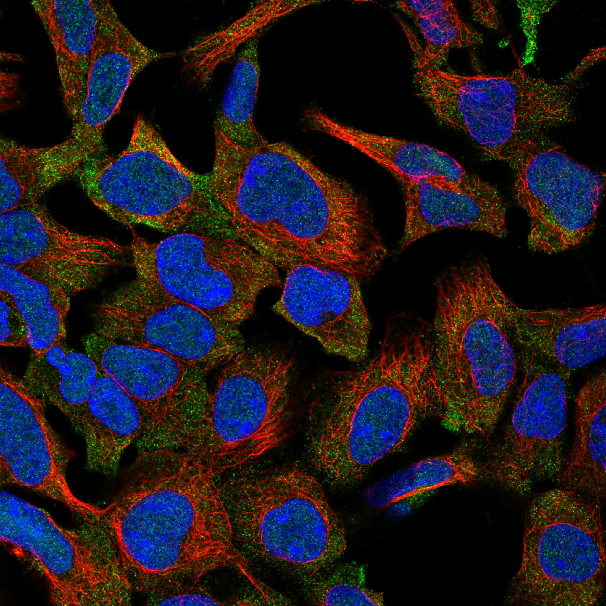
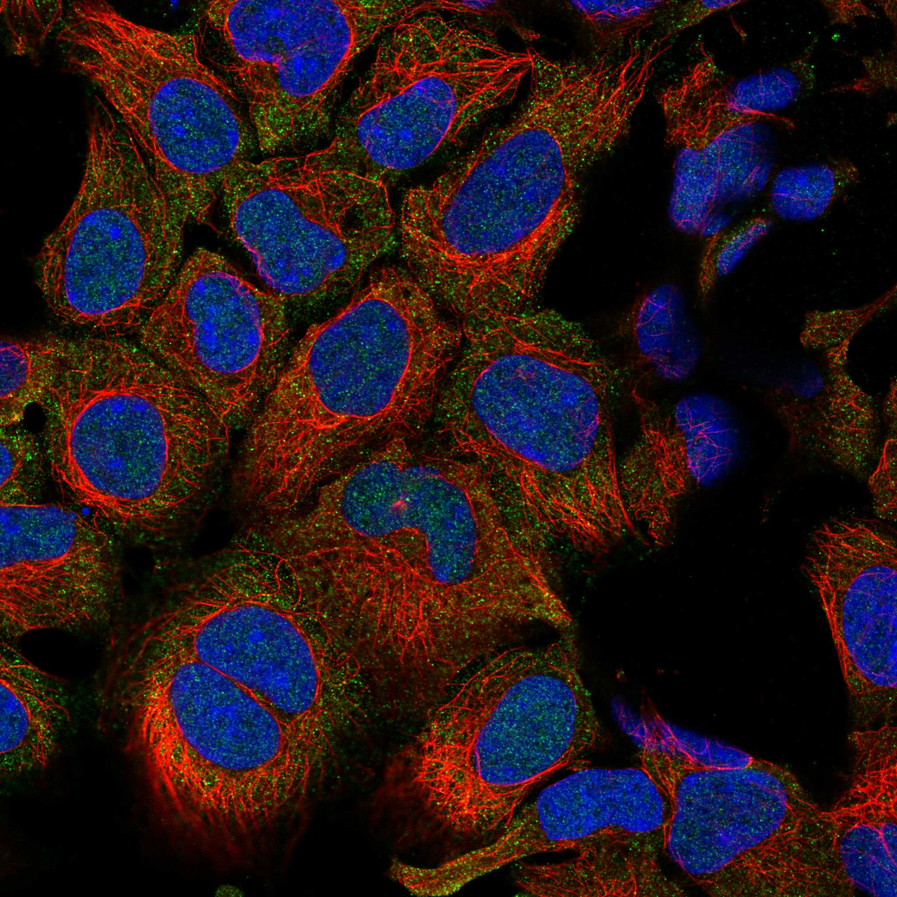

type: protein-evaluation gene: "DXO" date: 2026-06-03 tags: [protein-scout, nuclear-protein, evaluation] status: scored ---
DXO 核蛋白评估报告 (Full Re-evaluation)
1. 基本信息
| 项目 | 内容 |
|---|---|
| 基因名 / 别名 | DXO / DOM3L, DOM3Z, NG6 |
| 蛋白名称 | Decapping and exoribonuclease protein |
| 蛋白大小 | 396 aa / 44.9 kDa |
| UniProt ID | O77932 |
| 评估日期 | 2026-06-03 |
2. 评分总览
| 维度 | 得分 | 满分 | 加权后 | 关键证据摘要 |
|---|---|---|---|---|
| 核定位特异性 | 7/10 | ×4 | 28 | HPA: Nucleoplasm, Cytosol; 额外: Plasma membrane; UniProt: Nucleus |
| 蛋白大小 | 10/10 | ×1 | 10 | 396 aa / 44.9 kDa |
| 研究新颖性 | 6/10 | ×5 | 30 | PubMed strict=42 篇 (≤60→6) |
| 三维结构 | 8/10 | ×3 | 24 | AlphaFold v6 pLDDT=92.7; PDB: 无 |
| 调控结构域 | 8/10 | ×2 | 16 | InterPro: IPR013961, IPR039039; Pfam: PF08652 |
| PPI 网络 | 3/10 | ×3 | 9 | STRING 15 partners; IntAct 0 interactions |
| 互证加分 | — | max +3 | 1.0 | PDB+AF+STRING+IntAct cross-validation |
| 原始总分 | 118.0/180 | |||
| 归一化总分 | 65.6/100 |
3. 详细分析
3.1 核定位证据
| 来源 | 定位 | 可信度 |
|---|---|---|
| Protein Atlas (IF) | Nucleoplasm, Cytosol; 额外: Plasma membrane | Approved |
| UniProt | Nucleus | Swiss-Prot/TrEMBL |
HPA IF 图像已重新获取并嵌入（见下方 HPA IF 图像修正块）；此前“暂无/未可靠获取 IF”的表述为采集失败导致的误报。
GO Cellular Component:
- cytosol (GO:0005829)
- nucleoplasm (GO:0005654)
- nucleus (GO:0005634)
- plasma membrane (GO:0005886)
结论: 主要核定位，HPA 可靠性良好，有辅助数据源支持。
3.2 蛋白大小评估
评价: 大小适中（200-800 aa），适合常规生化实验和结构解析。
3.3 研究现状
| 指标 | 数值 |
|---|---|
| PubMed strict count | 42 |
| PubMed broad count | 99 |
| 别名(未计入scoring) | Aliases observed but not used for scoring: DOM3L, DOM3Z, NG6 |
关键文献: 1. Large-scale whole-exome sequencing analyses identified protein-coding variants associated with immune-mediated diseases in 350,770 adults.. *Nature communications*. PMID: 39009607 2. A novel 5'-hydroxyl dinucleotide hydrolase activity for the DXO/Rai1 family of enzymes.. *Nucleic acids research*. PMID: 31777937 3. Noncanonical RNA-capping: Discovery, mechanism, and physiological role debate.. *Wiley interdisciplinary reviews. RNA*. PMID: 30353673 4. An RNA Metabolism and Surveillance Quartet in the Major Histocompatibility Complex.. *Cells*. PMID: 31480283 5. 2'-O-methylation of the mRNA cap protects RNAs from decapping and degradation by DXO.. *PloS one*. PMID: 29601584
评价: 较新颖，有一定研究但存在未探索领域。
3.4 三维结构分析
| 指标 | 数值 |
|---|---|
| AlphaFold 版本 | v6 |
| AlphaFold 平均 pLDDT | 92.7 |
| 高置信度残基 (pLDDT>90) 占比 | 87.1% |
| 置信残基 (pLDDT 70-90) 占比 | 3.5% |
| 中等置信 (pLDDT 50-70) 占比 | 2.5% |
| 低置信 (pLDDT<50) 占比 | 6.8% |
| 有序区域 (pLDDT>70) 占比 | 90.6% |
| 可用 PDB 条目 | 无 |
PAE 图像说明: AlphaFold PAE 图像已重新获取并嵌入（见下方 PAE 图像修正块）；结构判断仍结合 pLDDT 与 PAE 综合判断。
评价: AlphaFold 极高置信度预测（pLDDT=92.7，有序区 90.6%），结构可靠。
3.5 结构域分析
| 来源 | 结构域 |
|---|---|
| InterPro/Pfam | InterPro: IPR013961, IPR039039; Pfam: PF08652 |
染色质调控潜力分析: 多个已知结构域注释，AlphaFold预测质量高，结构域折叠可信。
3.6 PPI 网络
STRING 预测互作 (combined score >0.4):
| Partner | Combined Score | Experimental | 功能类别 |
|---|---|---|---|
| XRN2 | 0.999 | 0.992 | — |
| EXOSC7 | 0.994 | 0.994 | — |
| TJAP1 | 0.905 | 0.000 | — |
| RPRD1A | 0.897 | 0.827 | — |
| SKIV2L | 0.880 | 0.088 | — |
| DCP2 | 0.876 | 0.000 | — |
| RPRD1B | 0.843 | 0.782 | — |
| FBF1 | 0.843 | 0.782 | — |
| STK19 | 0.836 | 0.000 | — |
| DNASE1L2 | 0.824 | 0.000 | — |
实验验证互作 (IntAct):
| Partner | 方法 | PMID |
|---|---|---|
| — | — | — |
PPI 互证分析:
- 仅STRING预测
- STRING partners: 15，IntAct interactions: 0
- 调控相关比例: 1 / 15 = 7%
评价: STRING 15 个预测互作，IntAct 0 个实验互作。调控相关配体占比 7%。
3.7 多库互证
| 维度 | 来源 | 结果 | 是否一致 |
|---|---|---|---|
| 三维结构 | AlphaFold pLDDT=92.7 + PDB: 无 | pLDDT=92.7, v6 | 仅预测 |
| 定位 | UniProt + HPA | Nucleus / Nucleoplasm, Cytosol; 额外: Plasma membrane | 一致 |
| PPI | STRING + IntAct | 15 + 0 interactions | 数据有限 |
互证加分明细:
- PDB + AlphaFold 双源验证: +0
- 多库定位一致 (3源): +0.5
- STRING + IntAct 双源验证: +0
- 结构域 + AlphaFold 质量: +0.5
- PDB 多条目覆盖: +0
总分: +1.0 / max +3
4. 总体评价
推荐等级: ⭐⭐⭐
核心优势: 1. DXO — Decapping and exoribonuclease protein，较新颖，有一定研究但存在未探索领域。 2. 蛋白大小396 aa，大小适中（200-800 aa），适合常规生化实验和结构解析。
风险/不确定性: 1. PubMed 42 篇，已有一定研究基础 2. 结构数据质量可接受
下一步建议:
- [ ] 查阅最新关键文献补充研究背景
- [ ] 获取 Protein Atlas IF 图像确认亚细胞定位
- [ ] 设计体外实验验证核定位及潜在调控功能
5. 数据来源
- UniProt: https://www.uniprot.org/uniprotkb/O77932
- Protein Atlas: https://www.proteinatlas.org/ENSG00000204348-DXO/subcellular
- PubMed: https://pubmed.ncbi.nlm.nih.gov/?term=DXO
- AlphaFold: https://alphafold.ebi.ac.uk/entry/O77932
- STRING: https://string-db.org/network/9606.ENSP00000
- Data fetched live: 2026-06-03
 
<!-- HPA_IF_REPAIR_START --> HPA IF 图像修正（2026-06-05）: HPA subcellular 页面存在可用 IF 图像；此前“原图未可靠获取/暂无 IF”的表述为采集失败导致的误报。HPA 定位: Nucleoplasm (supported)。来源: https://www.proteinatlas.org/ENSG00000204348-DXO/subcellular


<!-- AF_PAE_REPAIR_START --> PAE 图像修正（2026-06-05）: AlphaFold 提供 predicted aligned error 图像；此前“PAE 图像暂无数据”的表述为未获取/未嵌入导致。

<!-- DOMAIN_HUMANPPI_REPAIR_START -->
Domain/SMART 与 humanPPI 补充（2026-06-07）
SMART / UniProt domain
| Source | Data |
|---|---|
| UniProt | O77932 |
| SMART | 未在 UniProt xref 中检出 SMART 条目 |
| UniProt Domain [FT] | 未检出显式 UniProt Domain feature |
| InterPro | IPR013961;IPR039039; |
| Pfam | PF08652; |
humanPPI / HPA Interaction
Source: https://www.proteinatlas.org/ENSG00000204348-DXO/interaction
| Partner | Datasets | AF3/HPA structure |
|---|---|---|
| CCT7 | Intact | false |
| DNALI1 | Intact | false |
| EIF2S3 | Intact | false |
| HSPA2 | Intact | false |
| HSPB1 | Intact | false |
| HSPD1 | Intact | false |
| KLF11 | Intact | false |
| PECAM1 | Intact | false |
<!-- DOMAIN_HUMANPPI_REPAIR_END -->